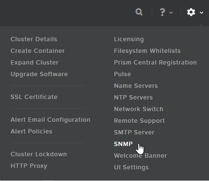
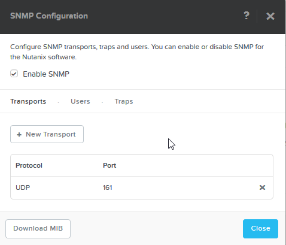
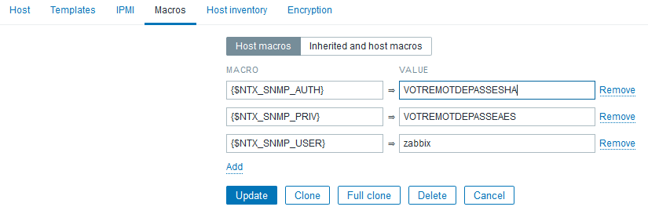

Template Nutanix pour Zabbix
This post is also available in english
Afin de superviser correctement notre cluster Nutanix sans passer trop de temps à configurer les objets à surveiller, j'ai construit un template Nutanix pour l'outil de monitoring Zabbix. Ce template s'occupe de découvrir automatiquement les containers, les CVM, les disques durs, les hyperviseurs …
This post is also available in english
Afin de superviser correctement notre cluster Nutanix sans passer trop de temps à configurer les objets à surveiller, j'ai construit un template Nutanix pour l'outil de monitoring Zabbix. Ce template s'occupe de découvrir automatiquement les containers, les CVM, les disques durs, les hyperviseurs ainsi que les machines virtuelles.
Une fois les objets découverts, un certains nombre de relevés de métriques, de graphs et de triggers sont mis en place.
Pour utiliser ce template correctement, il est nécessaire de paramétrer le serveur snmp de prism central, de récupérer la MIB de Nutanix pour l'intégrer dans le serveur Zabbix et de configurer quelques macro au niveau de l'hôte prism dans Zabbix. Nous allons tout de suite détailler ces quelques étapes.
Le template est paramétré pour utiliser SNMPv3 en mode authPriv avec Auth SHA et Privacy AES.
Prism Central
La configuration de prism se fait de façon assez simple via l'interface de paramétrage SNMP.

Assurez-vous que le transport soit bien configuré en UDP, sur le port de votre choix (161 par défaut)

Se rendre ensuite dans l'onglet Users et ajouter un nouvel utilisateur pour que zabbix puisse se connecter

Profitez-en pour télécharger la MIB via le bouton Download MIB, nous allons en avoir besoin.
Cliquez sur Save. La configuration de prism est terminée
MIB Nutanix
Une fois la MIB Nutanix récupérée, il faut la placer sur le serveur Zabbix. Sur un serveur CentOS, il faut placer le fichier dans /usr/share/snmp/mibs
# ls /usr/share/snmp/mibs/NUTANIX* /usr/share/snmp/mibs/NUTANIX-MIB
Afin que Zabbix prenne ce nouveau fichier en considération, il est nécessaire de redémarrer le service
# systemctl restart zabbix-server
Pour tester le bon fonctionnement de la MIB et de la configuration de prism, utilisons la commande snmpwalk qui va, dans cet exemple, lister les noms des containers Nutanix.
snmpwalk -v 3 -a SHA -A VOTREMOTDEPASSESHA -u zabbix -x AES -X VOTREMOTDEPASSEAES IP.DE.PRISM.CENTRAL -l AuthPriv citContainerName NUTANIX-MIB::citContainerName.1 = STRING: container00. NUTANIX-MIB::citContainerName.2 = STRING: containerA. NUTANIX-MIB::citContainerName.3 = STRING: containerB. NUTANIX-MIB::citContainerName.4 = STRING: containerC. NUTANIX-MIB::citContainerName.5 = STRING: RESERVED_SPACE. NUTANIX-MIB::citContainerName.6 = STRING: containerD.
La configuration du serveur est terminée. On peut passer à la configuration de Zabbix.
Zabbix
Si ce n'est pas déjà fait, créez un nouvel hôte pour prism central dans Zabbix. Cet hôte à besoin de 3 macros pour que le template Nutanix fonctionne. Ces 3 macros sont l'utilisateurs SNMP, le mot de passe SHA et le mot de passe AES.
Ces macros sont :
- {$NTX_SNMP_USER}
- {$NTX_SNMP_AUTH}
- {$NTX_SNMP_PRIV}

Importez ensuite ce Template dans Zabbix et appliquez le sur votre hôte Prism Central.
Par défaut, la découverte des VM est désactivée car il n'est pas possible de créer proprement des hôtes depuis ce processus LLD.
Si vous avez un cluster Nutanix volumineux et que Zabbix ne peux remonter les informations à cause d'une erreur de timeout, pensez à augmenter ce timeout dans la configuration de Zabbix
Timeout=10
Les bugs rencontrés actuellement sont les suivants :
- Jusqu'à la version 4.6 de NOS, le Discovery n'arrive pas à remonter tous les hyperviseurs. Le comportement est le même avec snmpwalk. Il semble que ce soit un problème du coté de Nutanix. Le problème est corrigé en 4.6.
- Le nombre de VM remontées est limité à 250. Sans doute une limitation coté Nutanix également.